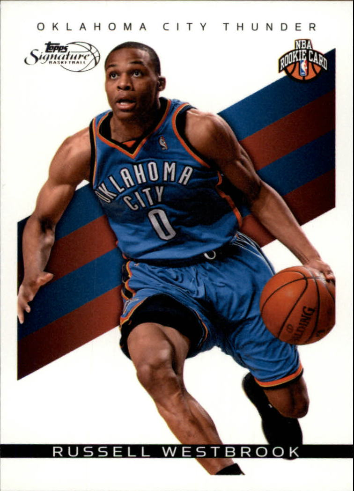

Library of NBA players
I want to learn how to create HTML code.
This is the official link to the Flash Wesbite.
- my top 2 favorite NBA Goats in my opinion
- LeBron James
- Russell Westbrook
- #23 | Currently playing for the Los Angeles Lakers roster.
- My second Goat
Russell Westbrook
#0 | Currently playing for the Los Angeles Lakers roster.
//second item is westbrook in unordered list
Two goated NBA players that are two of the most athletic athletes in NBA history.
//plural items in ordered list
Digital Library Rookie Cards
